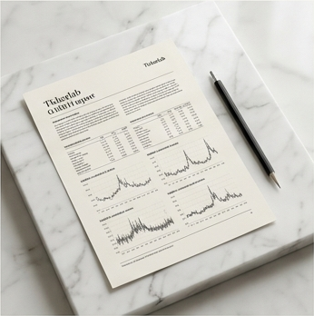

Analyse
Composez une étude complète : identification ARIMA, cinq variantes GARCH croisées avec quatre distributions, VaR et TVaR, backtesting Bâle IV. Une commande, un rapport.
Lancer une analyseCe que vous trouverez ici
Une plateforme d'économétrie financière complète, gratuite, fidèle aux conventions académiques.
tickerlab réunit en un même lieu l'estimation de modèles de séries temporelles, la mesure du risque de marché et sa validation réglementaire. Pensée pour les étudiants et les chercheurs, elle restitue des sorties au format EViews et des rapports rédigés en français académique.
Composez une étude complète : identification ARIMA, cinq variantes GARCH croisées avec quatre distributions, VaR et TVaR, backtesting Bâle IV. Une commande, un rapport.
Lancer une analyseLa lecture des marchés en continu : signaux d'achat et de vente sur la période de votre choix, fondés sur la volatilité conditionnelle des modèles retenus.
Consulter les signauxChaque méthode expliquée et chiffrée : les quatre temps du pipeline univarié, le module multivarié VAR, et la fidélité des sorties à la convention EViews.
Lire la méthodologieLe pipeline univarié complet — de l'identification Box-Jenkins au backtesting réglementaire.
Nouvelle analyseTableau en direct des positions suggérées par les modèles, sur la période de votre choix.
Voir le tableauLa précision, en quatre faits
Accès
Installation par pip, interface en ligne de commande, configurateur web. Gratuit pour les étudiants et les chercheurs, aujourd'hui et demain.
Python 3 · Licence libre · Documentation en français
Méthodologie
Quatre temps hérités de la tradition économétrique, un module multivarié, et une exigence constante : chaque chiffre doit pouvoir être retracé jusqu'à la formule qui l'a produit.
La série est d'abord soumise aux tests de stationnarité, puis les ordres ARIMA sont sélectionnés par lecture des corrélogrammes et minimisation des critères d'information, normalisés à la convention EViews pour une comparabilité parfaite avec la littérature.
Cinq variantes — GJR, EGARCH, TGARCH, APARCH, FIGARCH — sont estimées et croisées avec quatre distributions d'erreurs. La sélection est hiérarchique : l'AIC prime, la fenêtre de Burnham-Anderson garde la parcimonie, et le test de signe d'Engle-Ng dispose d'un droit de veto sur les candidats asymétriques mal spécifiés.
Les quantiles conditionnels sont dérivés du modèle retenu, à horizon et seuils paramétrables. La TVaR complète la VaR en mesurant la profondeur des pertes au-delà du seuil — le ratio des deux renseigne sur l'épaisseur de la queue de distribution.
Six tests forment la batterie de validation : couverture non conditionnelle de Kupiec, indépendance de Christoffersen, Dynamic Quantile, Acerbi-Székely pour la TVaR, Fissler-Ziegel, et le PIT de Berkowitz sur la densité entière. Aucun raccourci.
Au-delà de l'univarié, le module VAR lit les dépendances entre marchés : causalité de Granger par tests joints, fonctions de réponse impulsionnelle orthogonalisées, décomposition de la variance des erreurs de prévision. Chaque procédure est validée sur des processus générateurs de données connus avant d'atteindre vos séries.

Chaque estimation restitue la présentation canonique EViews en trois blocs, les libellés exacts des paramètres de distribution, et des pieds de tableau enrichis — R², erreur-type, critère de Hannan-Quinn, statistique de Durbin-Watson. La prose des rapports est académique, en français, prête pour un mémoire ou une publication.
Cette section détaillera la construction des signaux d'achat et de vente : volatilité conditionnelle issue du modèle retenu, seuils de déclenchement, mesure de confiance et règles de neutralité.
Effets fixes et aléatoires, test de Hausman, GMM d'Arellano-Bond : le module de panel rejoindra la plateforme accompagné de sa méthodologie complète.
Markov-Switching, DCC-GARCH, copules et HAR-RV : les modèles avancés seront documentés ici au fur et à mesure de leur intégration au moteur.
Nouvelle analyse
Choisissez l'actif, la période et la granularité. La commande se compose sous vos yeux ; le pipeline fait le reste.
Résultats de l'estimation
Démonstration — chiffres issus de l'étude Brent 2006 – 2024. La version connectée exécutera le pipeline réel (voir ROUTES).
Signaux
Lectures d'achat et de vente dérivées de la volatilité conditionnelle des modèles retenus, sur la période de votre choix.
| Date | Signal | σ conditionnelle | VaR 99 % | Confiance |
|---|
Démonstration à des fins pédagogiques — données simulées, dans l'attente du branchement au moteur (voir ROUTES). Ces signaux ne constituent en aucun cas un conseil en investissement.